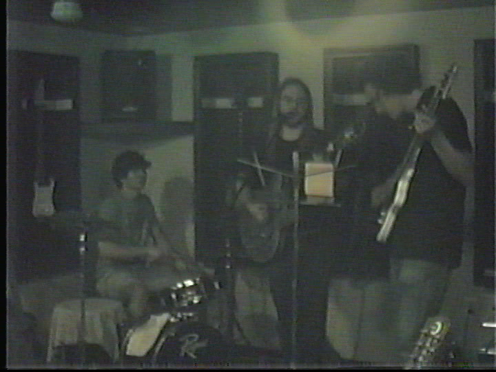

Welcome to Chocolate3.net!!!
Blog
Updated as interesting things happen (or when I feel like rambling)
Thursday, May 27, 2021
Site should be 100% fixed within the next 24-48 hours. I'll be back on Wednesday, the 2nd of June! See you all then!
Wednesday, May 26, 2021
Okay, so I've got a few updates. First, the website's changed! As of my writing this I've added some new 88x31s and I did a lot of "digital gardening". That means stuff like organizing files and stuff like that. I also am in the process of changing my website so it runs with the iMac G3 with OS9. That means no HTTPS. I've got to find a way to let this thing work on both older systems and modern. I'm just not sure how to get there. But yeah, evidently there is no browser for OS9 that is compatible with HTTPS, at least that's what I think(?) I'm really not smart when it comes to the Net, but I used to be a little better with it. I had all kinds of crazy stuff set up that I simplified today through some tutorials I read. I actually host through Github Pages which is really pleasant to use. I have a folder in my documents that I work in, and then I use the desktop app to push that version to the live version. I like it quite a bit.
Okay, enough meta talk. The other thing that happened is that I got the iMac online if you couldn't tell from earlier! For some reason, my ethernet wasn't working so I just had to reset the router and now it's perfect! I say perfect, but it's actually kind of not. There's a big shortage of browsers. The big one is called Classilla and it was updated til recently. The problem is that I can't get it to work on my Mac! It just won't open. I gotta do some more research later on. All I can access are standard http sites, I think. That means my own homepage is completely inaccessable! I can get on The Old Net, so I did have some fun looking at old websites. Here's a nice Mavica picture of my iMac on Apple's website in 1999.

Check it out, they're advertising my Mac!
Wow, I've rambled quite a bit. I've got one last thing and I'll leave you alone. I'm gonna be in Ohio from the 28th to the 2nd, so I'm not sure if I'll be updating this page til I'm back. I'm bringing along 3 cameras: a 1991 Agat 18k half frame 35mm camera, a Sony Hi8 Handicam, and the Sony Mavica. I'll be posting all of those pictures when I'm back if I don't update. Thanks for keeping up so far, I'll be back soon!
PS. I know the images don't work right now, I'm working on it!
Monday, May 24, 2021 - Part 2 of 2
Fantastic day! I went out with Devon today to a ball game which I wasn't sure I'd enjoy but was actually great, I don't even get the game but it was really fun to talk to her and joke around. I'm pretty sunburnt, though. A friend of hers poured water on her head and, for a second, I could see her actually kind of pissed off. I'd never seen that before, but she threw Gatorade on him so it was even. The letter she gave me yesterday really brought us a lot closer together, I think. It's just so fantastic to have a friend who cares for you just as much as you care for them. That's why I used that eden abhez quote earlier. That's just what represented my feelings in less words than it'd take me.
The other cool thing that happened is that I got my first Macintosh! It's a beautiful 1998 iMac G3 in Bondi Blue, I love it! I just got OS9 on it and it's so neat but also a lot to get used to. I'll install some contemporary software tomorrow, too before band practice. I'm headed to Ohio on the 28th which is horrifying. Devon also couldn't go to the show I have planned in the city in June which is kinda scary. I'm not angry, of course, but now there's gonna be nobody I know there which is really really horrifying. I debated backing out, but that's not really a good way to be, of course. Will update as things develop. I'll leave you with a pic of the Mac while it was installing OS9

Monday, May 24, 2021 - Part 1 of 2
I got super tired so I didn't update yesterday, so I'm making up for it today. Yesterday, my friend Devon gave me a graduation gift that made me hysterical crying because it was so touching. She photocopied all of the letters and CDs and random notes I'd ever written her and then gave them back to me, and included a playlist as well as a flash drive of all the photos she had of our memories. I've never been so deeply touched in my life, I really can't believe it even now. I started crying at this line: "[When we met], I had no idea that you would be the first person I would think about after throwing our graduation caps in the air." That reaally got me. I don't believe anyone's ever done something so incredibly kind. Even reading it I tear up again. I hadn't cried before then.
The greatest thing you'll ever learn is just to love and be loved in return.
-eden abhez
Sunday, May 23, 2021
Hi! I waited a few days cause I kinda just got lazy yet again. But I graduated! It was honeslty surreal and I'm not sure how it happened. I also won a neat photo printer at the school raffle thing. Now, there's nothing standing between me and going to Ohio! Besides, of course, getting a car and all that. I'm also maybe gonna get a super cool 1998 iMac G3! The blue one, too! Very exciting stuff. I'd love to get that thing running cause this Windows thing kinda sucks. I gotta research compact flash solutions for these, I'm not sure if they use the same hard drive cables as PC's do. Also today's my graduation party, so wish me luck! I'm bad at parties
Thursday, May 20, 2021
Hello again! It's been a long day and a half. Today was my last day going to the college for class, it's wild cause I've invested 3 years into the Media Arts Program here and now I'm just done. I had a long conversation with a friend about it today. He's a sophomore or something, I think. It's just so so incredibly unfathomable until you're really there at the precipice of something completely new and foreign. I honestly got close to crying when one of my classmates asked for an "exit interview". His words were more blunt, of course, he said he wanted something to remember me by. I rambled a bit about Woody Allen or something and he was happy. I hope I stay in contact with some of these wonderful people I've met. I really do.
In lighter news, I made a cake! Or, I should say, I am making one. I made the two layers but I haven't combined them yet nor have I frosted them. I'm probably gonna see if my mother will since she's an expert. I'll also probably write something on it. I actually took photos mostly as a joke but it was kinda fun to document the process even if it was incredibly simple. I'll add more tomorrow when it's really done.

Batter!

Batter (in pans this time!)

Cookin'

The "finished" product, glad I skipped Sign for this
Wednesday, May 19, 2021
Howdy, it's been a few days! I guess I just didn't have anything to say for a bit. I'd like to tell you a little about me over the next few days. I'll start with the biggest thing, that is that I graduate from High School this Friday. I practice for it tomorrow so that'll be fun, I hope. It's really pretty scary that I'll be going into the real world very soon. I feel like I should feel more prepared. There's no money for me to go to college, so I'm going to work til November and then I will be moving to Ohio to start a home studio with a friend I do music with. That's scary too, though more distantly so. There's so much I've got to do first, I need to learn to drive, for example. It's always scared me so bad that I've avoided it. I knew someone who was killed in an accident a few years ago, very scary stuff. I also haven't got a social security card which is a requirement in Kentucky. I'm practically being catapuluted into adulthood, it feels like. And another thing is working. I can't see myself doing anything. I'm hopefully gonna start at the TV station which is at least tolerable work, but it's hard for me. It's really hard. I see people blame the capitalist system for this, and they're probably right, but I need to eat! I'm so jealous of my friends who don't need to work. So, so, jealous.
Back to graduation, I am hoping to find something to do afterwards, I have a friend who might have a little party with me, so I'll bake a layer cake for that tomorrow if they're still coming. I'll post a photo too if I remember! It's hard cause I still can't believe I'm so close to the end. Today I did my last assignments, too. That's just incomprehensible to me. My grades got pretty bad at the end, but I've had a tough year so my parents get it (intermittently at least). I'm glad I'm not going to college cause I think the stress would kill me, plus I just feel done.
One other thing, I went to Starbucks today (a facet of my life these days) and they say you don't have to wear your mask if you get the vaccine. I got mine in late March so I'm good! The other day when I first heard I took mine off for a minute, but I got so nervous I put it back on! Today, though, I kept mine off the whole time. It's really gonna take work to get used to this. I mean, it's been like a year since we started doing this, habits like that are hard to break. As for as I know, most of the other local businesses either don't care or still have strict requirements, no in-between. By the way, one of my bands just got a bassist which is really really cool. I'll include a screengrab from the video we made yesterday at practice! See you all soon, probably tomorrow!
Pardon the low quality, this was taken from a VHS tape
Saturday, May 15, 2021
It's kind of funny that I said I wouldn't update for a bit, yet here I am! Either way I just had some basic life updates to make. First, I put in my 2 weeks at my current job at Domino's. It's actually gonna be 3 weeks since I'm gonna miss all of the week after next since I'm going to Ohio to play a gig with a band I play with. Secondly, I've been scheduled for an in-person show! It's gonna be at the Art Sanctuary in Louisville, KY on June 11th. I'm not sure if anyone reads these, but if you do you're welcome to either come or watch the live feed. Just look up something like "Late for Dinner Maxwell Whitaker" and it should show up. Also that's my stage name if you will. People call me a lot of things, you see. I've got a lot of fancy nicknames. Anyways, that's all for today!
Friday, May 14, 2021
Hi, I'm back! So, today and tomorrow I have work so I probably won't feel like updating much, but I should be back on Sunday. Today was a really nice day, I got up for school at 7:00 and then decided to just not go since I graduate next week. So, I went to Starbucks at 7:45 and it was actually a lot of fun. I also brought along this camera I found in a box, the Sony Mavica MVC-FD88. It works fine except the flash is broken. The Mavica line is interesting because they use floppy disks as a medium for storing pictures. Check out this one I took of my neighboorhood that morning.

Not amazing quality, of course, but it's not bad at all. It was super beautiful. This camera will come in handy for making natively small images since I don't really enjoy resizing stuff. By the way, I redid the logo at the top of the page! Kinda cool, eh? I made it in Adobe Dimensions 3.0 which is a very very obscure piece of software that basically made 3D stuff specifically for print. There's a modern sort of equivalent that's not really equivalent called Adobe Dimension which is cool. I used it on a school computer the other day and you can actually see what I did on my photo page. It's really cool software, basically you create something in, say, Illustrator and then import the project file (or .bmp file) and make it 3D. Isn't that weird? There's no real modern equivalent. I'm still learning it but it's pretty neat stuff. Anyways, I'd best get going, thanks for reading!
PS. Corin says hello
Thursday, May 13, 2021
Hiya! As I write this, it's currently a little past midnight, but I'm gonna count this for the 13th since I'm fairly sure I'll write tomorrow. I've just had the time of my life setting this computer up, so I figure I'll tell you about it. It's this old Gateway thing from like 2001-ish and it shipped with Windows ME which is a really not-great operating system I'm told. So I think, "Hmm... I'll just put 2000 on it and then bam I'll be good. That was not the case. My first hurdle was the monitor, a Packard Bell (Rememember them?) CRT from 1996. This monitor was the one my father used back in the day on the same computer he met my mother using. Fun stuff. But that's besides the point. This thing is kinda gross. Now, I'm a grown man, I can handle gross. What I could not handle was clicking, and this thing was clicking! So, I consulted the internet about it and it turns out that's the high voltage failing. You may ask, "Syd, please enlighten us with your stolen wisdom!" and to that I'd say, "It means it'll go boom." So, I had to switch to a 16:9 (Someday I gotta rant about how much I despise widescreen) LCD I found lying around. This wasn't much of a hassle, but I'm a huge jerk or something so I'm still gonna complain.
So, that brings me to my next problem: Windows 2000. I'm not a computer genius and I hope nobody who reads this is because I am going to make myself sound like an idiot. First time I try to install, it gets to the part where it reboots and there's nothing! It just hangs at the BIOS. So I do what any reasonable person would do and install DOS 7, then Windows 98 SE (relavent later), THEN and only then can I upgrade to Windows 2000. I didn't even know it was possible. But then, disaster strikes! It doesn't work! I swear to god I did all this probably 5 or 6 times. So, after trying a few more .iso files, I give up. Then, it hits me: I already installed Windows 98 SE and it worked okay(or at least okay-ish, we'll get to that)! First try doesn't work due to me fucking up the DOS 7 setup, so on the second go, I finally get it. But then, foolishness prevails and I decide to use the Gateway restore discs that came with the system. After a few more hours wasted, I go back to 98 SE and realize that I have 3 big problems that I noticed. First was that there was no USB support. This was the easiest thing to fix as it was just a single executable and a reboot. Second, there was no audio. Not sure exactly what I'm gonna do about this, so we'll leave it for now. Third, there was only 16 colors. At this point I was tired and close to just giving up, but I'm glad I kept working. After about 300,000 tries, I finally thought of something. Remember the Gateway System Restore disks? They had drivers on them! I guess Gateway was just lazy or something, but it looks like these disks have software for 98, ME, and 2000, so that's fun. But, after around 10 minutes, I got it working nearly perfectly. There's still some infrequent screen glitching going on, I'm not even sure how to describe it, but it's not really noticeable enough to really make me wanna change it. So, that's the story of how I fixed up the old Gateway. I might not be able to update til Sunday since I'm working, but I'll be back soon enough and I'm hoping to get a new job soon where I can do this stuff more often if that makes sense. Anyways, goodnight everyone! I'm beat.
Update: Here's a photo of the setup, made with one of the fancy floppy disk cameras for proper aesthetic

Wednesday, May 12, 2021
This is a test of the blog function of my website. Today I worked on my website and, as of writing, I've finished 3 pages: the homepage, the about me section, and the blog. Hopefully I can get it all done either today or tomorrow! The new hard drive for my other computer arrives tomorrow and I will install Windows 2000 on it and then I can not be distracted by all the tantalizing LCD screen stuff.